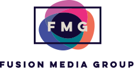

DevMountain - Web Immersive Mentor
June 2018 to Present
DevMountain - Basecamp Mentor
Jan. 2018 to May 2018

HackYale - Instructor
Feb. 2014 to Jan. 2016
- Taught a three-week course on Natural Language Processing to undergrad and graduate students
- Created exercises in Python to demonstrate basic corpus manipulation and analysis
- Used the Python Natural Language Toolkit for text classification
View Slides

Fusion - Digital Intern
June 2014 - Sep. 2014
- Worked with TV producers to adapt their T.V. content for online audiences
- Edited and uploaded videos, managed YouTube analytics, and optimized channel using SEO principles
- Met with consultants to hit a target goal of 50,000 subscribers and 1,000,000 channel views over the course of one month
- Channel currently has ~275,000 subscribers and 100,000,000 channel views
YouTube Channel

Project: Shattered Silence - Actor/Writer/Social Media Manager
Sep. 2010 - May 2013
- Helped raise $100,000 through Kickstarter, social media, and backer auditions
- Profiled in the documentary which won a 2013 regional Emmy Award
- Worked with the project's director to draft a proposal which resulted in a PBS-WEDU documentary
Kickstarter Page